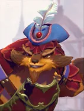
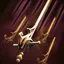

Swashbuckle
Active ability: Activates on Full Mana
Pangolier dashes along a target line, then slashes all enemies in the direction with several quick swipes, dealing attack damage.
| ★ | ★★ | ★★★ | |
|---|---|---|---|
| ATTACK INTERVAL | 0.1 | ||
| SLASH RANGE | 150 | ||
| NUMBER OF SLASHES | 4 | 5 | 6 |
| Max Distance | 550 | 600 | 650 |
| Cooldown (s) | 10 | 8 | 6 |
| Mana cost | 100 | ||
- Immune to all damage when rolling.
The Pangoliers blade is even nimbler than his tongue.
Stats
| ★ | ★★ | ★★★ | |
|---|---|---|---|
| Health | 850 | 1700 | 3400 |
| Mana | 100 | 100 | 100 |
| Armor | 8 | 8 | 8 |
| Magic resistance | 0% | 0% | 0% |
| Attack damage | 60–100 | 120–200 | 240–400 |
| Attack interval (s) | 1 | 1 | 1 |
| Attack range | 205 | 205 | 205 |
| Move speed | 500 | 500 | 500 |
 Beast · Power of the Wild
Beast · Power of the Wild
- (2) All allies, including summons, deal +10% attack damage.
- (4) All allies, including summons, deal another +25% attack damage (+35% in total).
- (6) Physical damage from your allies stacks a debuff on the target, up to 10 stacks. Each stack makes it take +10% physical damage, up to +100%.
 Assassin · Coup de Grace
Assassin · Coup de Grace
At the start of each battle, Assassins leap behind the enemy lineup with their first move. (The guaranteed critical hit after the leap needs the (3) Assassin bonus or higher.)
- (3) Assassins get a 15% chance to crit for 250% damage. Their first hit after the leap always crits.
- (6) Assassins get an extra, separate 15% chance to crit for 400% damage, which stacks with the (3) bonus. The post-leap crit is 250% or 400% at random.
- (9) Assassins can leap again after getting a kill, or when a 5-10 second timer runs out. Every post-leap hit uses the highest crit the piece has (at least 400%).